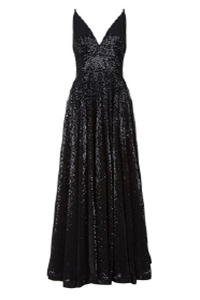
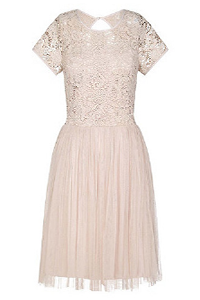
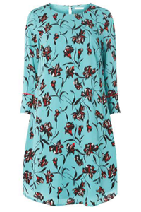
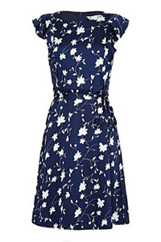
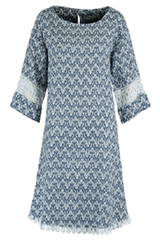

Top subcategories this week
Party Dress
Look effortlessly glamorous in a casual black maxi dress to do everything from a day of errands, to brunch with friends, to even an informal date. The best part? While you’ll look great, you’ll also be entirely comfortable
Prom Dress
LSlip dresses have been a huge trend on the runways lately. Nothing is as timelessly sexy as a black slip style, which can be dressed up or down depending on what you pair it with.
Shift Dress
It’s hard to go wrong in a classic black sheath dress, perfect for more formal days at the office. Another bonus of the look? It transitions perfectly from day to night with the addition of statement jewelry and a change of shoes
Skater Dress
A classic black dress just seems so much more glamorous when created in lace. Dolce & Gabbana can’t get enough of this look in recent collections, and great variations abound at less expensive retailers like Zara and H&M, too
Tunic Dress
Look effortlessly glamorous in a casual black maxi dress to do everything from a day of errands, to brunch with friends, to even an informal date. The best part? While you’ll look great, you’ll also be entirely comfortable